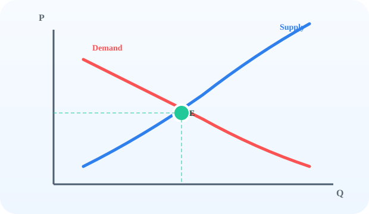

Chapter 1
Market Equilibrium
Learn how supply and demand interact to establish market equilibrium. Use the panel below to view the textbook graph, watch an animation, build the curve step-by-step, and explore surplus and shortage.
Book View
Here’s the classic supply and demand graph illustrated in the textbook.

Figure 1.1: Supply and demand curves intersect at market equilibrium.
Animate
Watch how supply and demand move together to create an equilibrium price.
The curves animate to show how a shift in demand changes the equilibrium price and quantity.
Build
Click "Next Step" to add each part of the market equilibrium graph.
Step 1 of 6
Start with the market axes.
Explore
Click one of the price markers to see whether the market has surplus, shortage, or equilibrium.
Choose a price to illustrate market surplus or shortage.